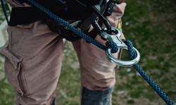

All rope-based activities take place on site with full safety equipment provided.
Scale the highs of one of the local quarry slabs. Max group size 8. Ages 8+
Take the scary step and abseil from the top of one of the local quarry slabs. There is a lovely view... if you are brave enough to look down! Max group size 8. Ages 8+
Ever wondered how telephone engineers get to the top of the telephone poles? Well, here’s your chance to find out. Max group size 8. Ages 8+

‘I was really scared about the abseiling but the instructor Mike was really encouraging and helped me do it, thanks Mike’ Sophie, aged 10
Link